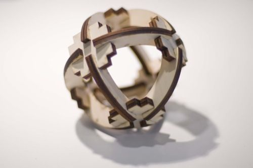
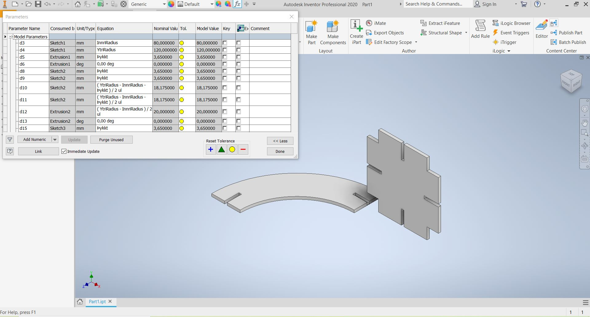
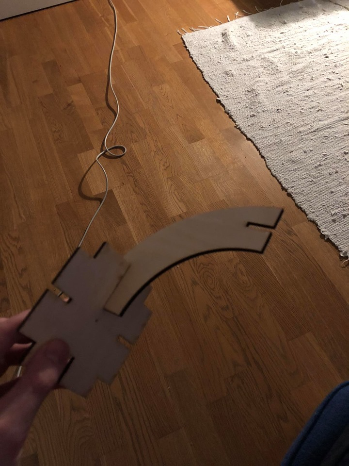
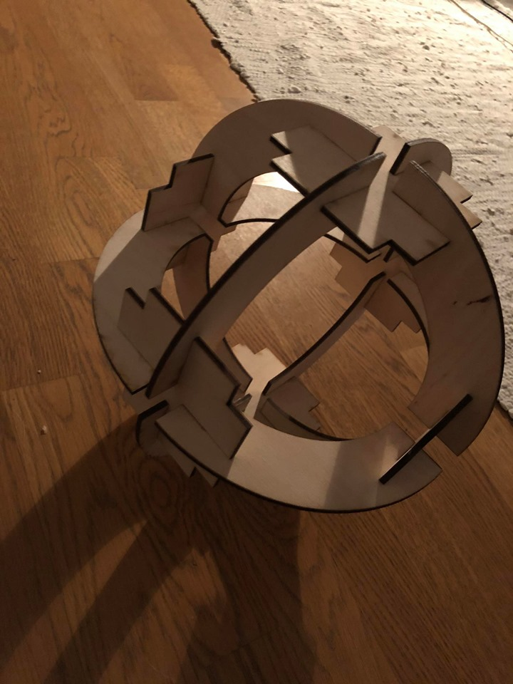

Computer-aided design and cutting
For this assignment we were supposed to use a CAD program to make a parametric design of a pressfit construction kit. I opted to
do this using Inventor, and I found a picture of a fun pressfit project online. Here below is the picture.

I knew I had to make two different parts, the "bendy part" and a part to hold them together. I knew I needed 8 "bendy" parts and
4 pieces to hold it together. I tried some different parameters but ended up using these.

The parameters above were used after I had discovered that the laser cutter actually takes some of the wood off, and the
pieces were way too loose when assembled. As instruced I had only tried cutting out one of each component and tried fitting
them together, to save material. It was also very important to remember to turn on the fan in the laser cutter, that memory
stood out. I didn't have to assemble my pieces in Inventor since I knew all the parameters and now had a prototype. I measured
the dimensions which I had to fix and decided on the parameters above. The prototype parts are here below:

It was a bit of a hassle to get the Inventor drawings into the laser cutter, but to do that I had to save them as a special
file, upload them into Inkscape and put in all the settings of the laser cutter we were using. Then I had to move it onto
a USB stick and take it to the laser cutter computer and put all the settings for the cutting as instructed. The final
outcome was this.

I had to be careful when assembling it, so as to not break the parts I had spent so much time manufacturing. I had to put everything
together at the same time, just pushing each fit a little bit in. When the parts were stuck together, I had to press them all
towards the center. The whole project took around 7 hours.